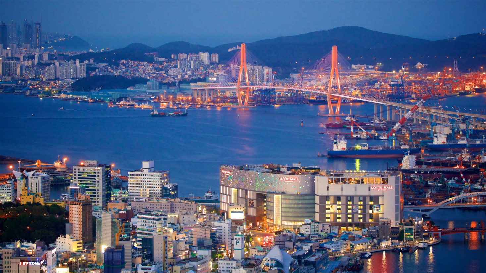
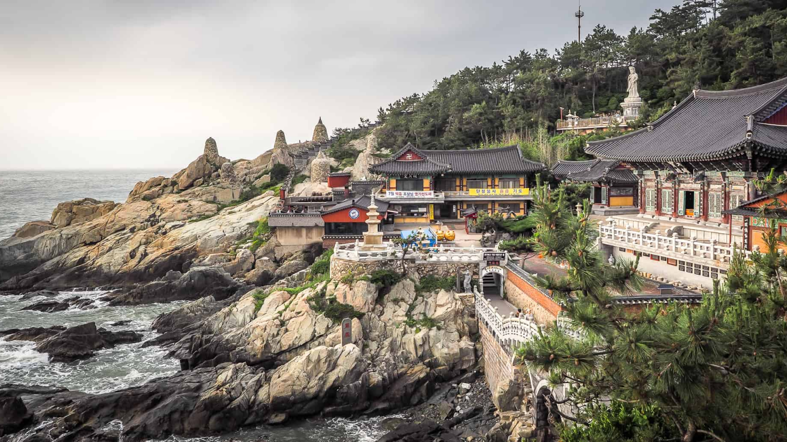

Busan é a segunda maior cidade da Coreia do Sul e um dos destinos mais fascinantes da Ásia. Diferente da agitação urbana de Seul, Busan revela um lado mais tranquilo e contemplativo, onde tradição, natureza e paisagens deslumbrantes se encontram. Descubra a harmonia única entre cultura e serenidade visitando alguns dos lugares mais emblemáticos da região.

Para os amantes de história
Descubra 3 destinos imperdíveis em Busan
1. Templo Haedong Yonggungsa
À beira do mar, o impressionante Haedong Yonggungsa oferece uma experiência rara: um templo budista construído sobre rochas com vista direta para o oceano. O som das ondas e a brisa marinha criam um ambiente de paz que transforma qualquer visita em um momento inesquecível.

Dica: Vá cedo pela manhã para evitar multidões. A vista é simplesmente mágica e rende fotos incríveis.
2. Templo Beomeo-sa
Nas montanhas tranquilas de Busan, o tradicional Beomeosa Temple revela um refúgio de paz e espiritualidade. Cercado por florestas e trilhas naturais, o templo convida você a desacelerar e se desconectar do ritmo acelerado da cidade. Com sua arquitetura histórica e atmosfera serena, é o lugar perfeito para vivenciar a essência da cultura coreana e experimentar um momento genuíno de contemplação.

Dica: Reserve tempo para explorar as trilhas ao redor. Caminhar pela floresta até o templo proporciona uma experiência de paz e conexão com a natureza, além de revelar pequenos santuários e estátuas escondidas.
3. Parque Yongdusan
O Yongdusan Park oferece uma das vistas mais encantadoras da cidade. Localizado no coração de Busan, o parque é perfeito para caminhadas tranquilas e momentos de contemplação, com panoramas que revelam o contraste fascinante entre o urbano e o natural.

Dica: Suba até a Torre de Busan dentro do parque para ter uma vista panorâmica da cidade e do porto. O pôr do sol é especialmente deslumbrante daqui.
As melhores coisas para fazer em Busan mostram a reputação da cidade como um importante porto marítimo na Ásia. Frequentemente vista como a essência da Coreia do Sul, você experimentará uma atmosfera única em termos de diversidade étnica e cultural, já que a cidade recebe um público cosmopolita o ano todo.